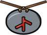

Runecarver Orm
Dialogue
“Every stone on the barrow road was cut by my grandfather's grandfather.”
“A rune charm on a cord turns a blow, now and then. Ask any huscarl.”
Shop
| Item | Price |
|---|---|
 Rune Charm | 120 gold |
Buys
| Item | Pays |
|---|---|
| 1 gold | |
| 1 gold | |
| 1 gold | |
| 1 gold | |
| 1 gold | |
| 1 gold | |
| 1 gold | |
| 1 gold |